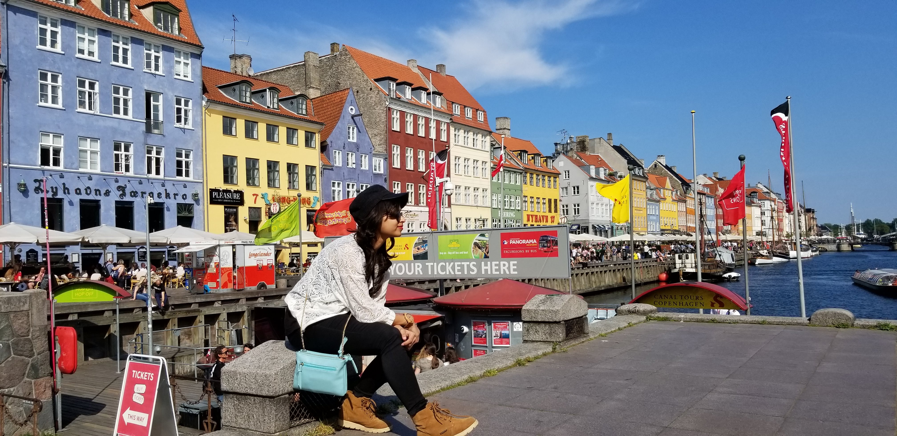

Data Scientist · Analyst · IEEE Researcher
7+ years building data systems that work in the real world — from enterprise ETL pipelines at TCS to clinical trial analytics at Calyx to published ML research at Temple University. Currently building wearable biosensor data pipelines at URI's Wearable Biosensing Lab. Dual MS · 2 IEEE papers · NSF-funded · healthcare domain & wearable computing specialist.
I'm Pramita — a data and business analyst who has spent 7+ years making enterprise data useful: clean pipelines at TCS, clinical trial dashboards at Calyx, care system workflows at Right at Home, and published research on energy-efficient sensor networks at Temple University, and currently building wearable biosensor data pipelines at the University of Rhode Island's Wearable Biosensing Lab.
I believe the best analysis isn't just technically sound — it tells a story clearly enough that the right decision becomes obvious. That's what I build toward, whether the output is a Power BI dashboard, a Python model, or a BPMN workflow diagram.
When I'm not working with data, I'm usually out exploring — I've worked professionally across 3 countries (India, UK, and the USA) and travelled to 20+ countries across 4 continents, chasing ancient ruins, mountain trails, and ocean floors.
Ancient ruins, mountain trails, ocean floors — and the data stories in between.


Essays on technology, culture, and the books that changed how I see the world.